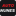
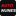
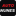

21 · Centro · carvão
#17171A · Alinhamento centrado · intervalo 8/64

AutoNunes 32 pxAutoNunes 32 px
ICO 16/32/48/64 · SVG com raster incorporado · PNG 180 · PNG 256
As versões 09/10 escalavam cada palavra para uma largura semelhante, fazendo AUTO parecer maior e NUNES mais fino. Esta série usa a mesma altura nas duas palavras, preserva os recortes reais e revê margens, alinhamento e intervalo.
Não foi encontrado um original vetorial nem um ficheiro de fonte da marca. Não foram usadas fontes substitutas nem letras geradas. A composição é nova; os contornos e as cores são amostras dos PNG originais. SVG incorpora os recortes raster e não é apresentado como vetor original. PNG/ICO têm posicionamento de píxel ajustado por tamanho.
Comparar a 100% de zoom. A leitura de um nome de nove letras a 16 px continua limitada. Nenhuma proposta foi ativada.
#17171A · Alinhamento centrado · intervalo 8/64

AutoNunes 32 pxICO 16/32/48/64 · SVG com raster incorporado · PNG 180 · PNG 256
#F5F5F1 · Alinhamento centrado · intervalo 8/64
ICO 16/32/48/64 · SVG com raster incorporado · PNG 180 · PNG 256
#252528 · Alinhamento centrado · intervalo 4/64
ICO 16/32/48/64 · SVG com raster incorporado · PNG 180 · PNG 256
#FFFFFF · Alinhamento centrado · intervalo 4/64
ICO 16/32/48/64 · SVG com raster incorporado · PNG 180 · PNG 256
#101012 · Alinhamento à esquerda · intervalo 6/64

AutoNunes 32 pxICO 16/32/48/64 · SVG com raster incorporado · PNG 180 · PNG 256
#F6F4EF · Alinhamento à esquerda · intervalo 6/64
ICO 16/32/48/64 · SVG com raster incorporado · PNG 180 · PNG 256
#0C0C0E · Alinhamento centrado · intervalo 8/64

AutoNunes 32 pxICO 16/32/48/64 · SVG com raster incorporado · PNG 180 · PNG 256
#F3F3EF · Alinhamento centrado · intervalo 8/64
ICO 16/32/48/64 · SVG com raster incorporado · PNG 180 · PNG 256